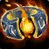

Gearing
We will talk about our stat priority and what pieces of gear you should prioritize obtaining. Gearing this season is very straightforward. When it comes to trinkets, especially, there are only a few good options.
Stat Priority
You want to prioritize your stats as the following: Versatility > Critical Strike = Mastery > Haste. Once you are fully geared, you want to try and obtain a total of 35% Versatility, 40% Critical Strike, 30% Mastery, and close to 0% Haste. Leech and Avoidance are very good tertiary stats for us, but we currently don't want to ever sacrifice item level for them.


Critical Strike
Critical Strike is strong for us both offensively and defensively, as it increases our Celestial Fortune healing. Critical Strike can also make our 2pc healing stronger, as it's based on the damage that you deal.
Tier Set
Our tier set this season is extremely strong, especially on AoE. Our 2pc causes our Breath of Fire to deal 40% additional damage as Shadowflame, while also causing us to heal for 50% of all the fire damage we do. Our 4pc causes all of our attacks to have a chance to deal an additional 15% Shadowflame damage. It also makes our Celestial Brew a lot stronger, causing it to absorb extra damage based on 100% of all Shadowflame damage that we have dealt since our last Celestial Brew.


Mantle of the Waking Fist
Shoulders
Unfortunately, the shoulders have a little bit of haste. The haste on the shoulders is less than the helmet, though, so we want to run shoulders instead.
Equipment
We will discuss what pieces of gear that you want to try and obtain for each slot, along with why. Keep in mind that item level is always the most important thing outside of necks, rings, and trinkets.
Head
Crown of Roaring Storms
This helmet gives as lot of Versatility and Critical Strike, making it a great option.
Neck

Elemental Lariat
This neck is extremely strong, as it has a change at strengthening the secondary stats we gain from our gems. You do not want to run this until you have full sockets, though.
Back
Inflammable Drapeleaf
This cloak has a lot of Critical Strike and a good amount of Versatility, helping us reach our stat goals.
Wrist

Primordial Serpent's Bindings
These wrists are very similar to the Chronomancer's Stasis Shackles, but have slightly more Versatility.
Waist

Bloody Dragonhide Belt
This belt is really good for us as it gives a lot of Critical Strike and a little bit of Versatility.
Feet

Slimy Expulsion Boots
These boots have good stats for us, helping us get our Versatility and Mastery up. Not only this, but they also have an embellishment attached to them that does good damage on single target. There is no other competitive option for boots because of how good these are for us.
Rings
Seal of Filial Duty
This ring is extremely powerful. Although it provides a little bit of haste, it gives us a lot of mastery and also has a very strong on equip effect. Whenever we deal damage, this ring has a chance of granting us a shield. This should be your first purchase with the dinar tokens.
Weapons
Djaruun, Pillar of the Elder Flame
This weapon is extremely powerful. It gives us good stats, providing a lot of Critical Strike and some Mastery, as well as having a very strong on use effect. This should be your second purchase with the dinar tokens.
Defensive Trinkets


Granyth's Enduring Scale
This trinket has been reworked this season and has become extremely powerful. It now is an on-use trinket that grants a massive shield, along with a ton of armor. This is extremely good for Brewmaster, as we really struggle with our low armor. This trinket will always be run on both fortified and tyrannical mythic+ keys.
Offensive Trinkets
Manic Grieftorch
This trinket is our best damage trinket. On use, we cast and unleash a massive amount of fire damage. The cooldown is also reduced greatly whenever an allie dies. I will run this on tyrannical mythic+ keys.
Embellishments
This season, there are a few good embellishments for us. Early in the season, you want to run Coated in Slime with the Potion Absorsption Inhibitor, but, once you get full sockets, you will want to run Elemental Lariat instead of the Potion Absorption Inhibitor.


Coated in Slime
This embellishment does pretty good damage on single target. It can only be obtained by crafting Slimy Expulsion Boots, which, fortunately for us, has good secondary stats.
Enchantments & Consumables
Enchantments and consumables are very important for your character. We will discuss what enchants and consumables that you want, along with why. Certain enchants and consumables may vary based on your stats.
Enchantments


Incandescent Essence
Head
This enchant is very strong. It gives our abilities a chance to surround us with a shield of fire, which deals damage to enemies and shields us from a decent amount of damage.
Consumables


Hissing Rune
Weapon Rune(s)
Unlike the rest of our secondary stat choices, you always want to run Hissing Runes because Mastery has a lot more static power than a little bit more Critical Strike.
Gems
The gems that you socket into your gear depends on your own stats. Keep in mind that necks can now also be triple socketed via Tiered Medallian Setting and that you can only have one unique type of gem.
Unique Gems

Inscribed Illimited Diamond
The gem that you run depends on the statting that you require. If you don't need any more Versatility or Mastery, you want to run this gem for additional Critical Strike.
Regular Gems


Radiant Alexstraszite
If you prefer more Critical Strike with a little bit of Versatility, run this gem.